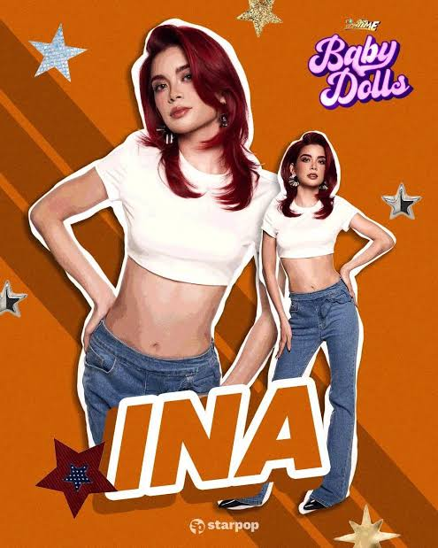

Personal Information
Full Name: Ina Ortega
Group: Baby Dolls
Profession: Performer and dancer
Previous Experience: Ballet
Other Profession: Reported to be a registered nurse
Nationality: Filipino
Birthday: July 28, 1999
Hometown: Quezon City
About Her: Ina is a member of Baby Dolls who has a background in ballet. Entertainment coverage has reported that she is also a registered nurse, bringing together her healthcare profession and her passion for performing.